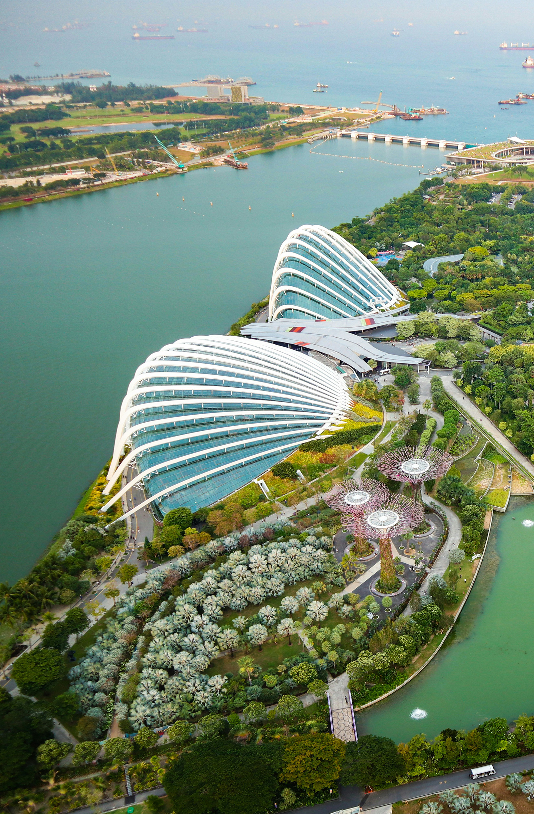

An office your family can lean on for the long run.
Cedars Woods is a multi-family office working with families across Singapore and Australia.

Cross-border wealth grows more involved over time.
With teams in Singapore and Sydney working as one, we know each family's affairs across both countries in full, so the intricacies of international wealth become ours to manage. We stay close to your family through life's changes and make the necessary revisions as circumstances evolve.

The advice we provide at Cedars Woods is theirs alone. We earn nothing from the products we recommend, so we suggest only what suits the family.
In time, we become something close to professional family members, the people a family calls first for big decisions. At Cedars Woods, staying aligned, year after year, is our priority.
One office for the whole of your family's wealth.
Wealth Management
Investment strategy and portfolios built around a family's goals and time horizon.
Tax, Accounting & Advisory
Reporting and tax across Singapore and Australia, kept current as circumstances change.
Property Services
Acquiring, holding and caring for property in both markets.
Business Succession
Preparing the business and its next generation of leadership for a smooth handover of responsibility.
Philanthropy
Giving that reflects what a family values, kept on course.
Lifestyle Asset Management
The care of homes, art, vehicles and the assets a family enjoys.
What our families say
If you would like to talk, we would be glad to hear from you.
A first conversation is private and without obligation, and it is the start of the peace of mind that comes from knowing your affairs are in good hands.
Start a Conversation